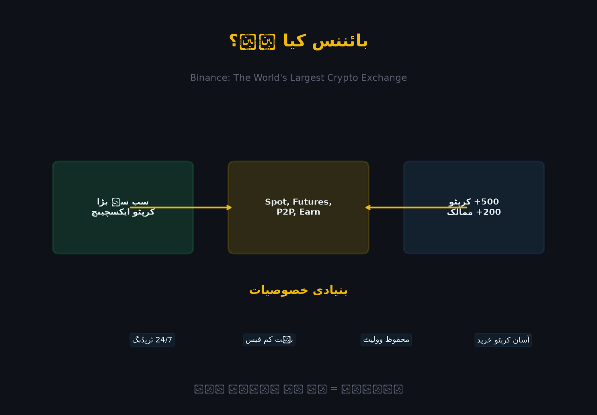

بائننس (Binance) صرف ایک ایکسچینج نہیں — یہ ایک مکمل کرپٹو ماحول (Ecosystem) ہے جہاں آپ خرید، فروخت، کمائی، محفوظ رکھ، ادائیگی اور اپنے پراجیکٹس بنا سکتے ہیں۔ اس باب میں ہم بائننس کو صفر سے سمجھیں گے — یعنی کرپٹو کرنسی کیا ہے، ایکسچینج کیا ہے، اور پھر بائننس کا پورا منظر نامہ۔
بائننس کو سمجھنے سے پہلے ہمیں یہ جاننا ضروری ہے کہ کرپٹو کرنسی کیا ہے اور اسے خریدنے کے لیے کسی ایکسچینج کی ضرورت کیوں پڑتی ہے۔
کرپٹو کرنسی ایک ایسی ڈیجیٹل (ڈیجیٹل) کرنسی ہے جو کسی بینک یا حکومت کے کنٹرول میں نہیں ہے۔ یہ بلاک چین (Blockchain) نامی ٹیکنالوجی پر کام کرتی ہے — جو دنیا بھر میں پھیے ہوئے ہزاروں کمپیوٹرز پر ایک مشترکہ کھاتہ رکھتی ہے۔
| پہلو | روایتی روپیہ (PKR) | کرپٹو کرنسی (جیسے BTC) |
|---|---|---|
| کنٹرول | اسٹیٹ بینک / حکومت | کوئی مرکزی ادارہ نہیں (DeCentralized) |
| موجودگی | کاغذی نوٹ + بینک کھاتے | صرف ڈیجیٹل (بلاک چین پر) |
| ٹرانسفر | بینک کی اجازت سے | براہِ راست، پیرٹو پیر (Peer-to-Peer) |
| رکھوٹی | ہر روز مہنگی (مفلوسی) | محدود اور پہلے سے طے شدہ (مثلاً 21 ملین BTC) |
| کھلنے کا وقت | بینک اوقات (9-5) | 24 گھنٹے، 7 دن، 365 دن |
سب سے مشہور کرپٹو کرنسیاں:
| کرنسی | علامت (Symbol) | وجہ شہرت |
|---|---|---|
| Bitcoin | BTC | سب سے پہلی اور سب سے بڑی کرپٹو — "ڈیجیٹل سونا" |
| Ethereum | ETH | سمارٹ کنٹریکٹس اور DeFi کا بانی |
| Tether | USDT | Stablecoin — ہمیشہ 1 ڈالر کے برابر (پیگ) |
| BNB | BNB | بائننس کا اپنا ٹوکن (فیس میں رعایت) |
| Solana | SOL | تیز اور سستی ٹرانزیکشنز |
| XRP | XRP | بینکوں کے لیے تیز پیسے منتقل کرنا |
💡 USDT سب سے اہم ہے: پاکستان اور دنیا میں اکثر ٹریڈنگ USDT میں ہوتی ہے۔ یہ Stablecoin ہے — یعنی اس کی قیمت ہمیشہ 1 ڈالر کے آس پاس رہتی ہے۔ اس لیے اسے "کرپٹو کا ڈالر" کہتے ہیں۔
فرض کریں آپ کے پاس روپے ہیں اور آپ Bitcoin خریدنا چاہتے ہیں۔ آپ کسی ایسے شخص کو ڈھونڈیں گے جو BTC بیچنا چاہتا ہو اور آپ کا روپیہ قبول کرے۔ یہ تلاش بہت مشکل ہے۔
ایکسچینج وہ جگہ ہے جہاں خریدار اور فروخت کنندہ ملتے ہیں۔ یہ ایک ڈیجیٹل بازار ہے جہاں لاکھوں لوگ اکٹھے ہوتے ہیں، اس لیے آپ کو فوراً خریدار/فروخت کنندہ مل جاتا ہے، اور قیمت خود بخود مروجہ قیمت (Market Price) پر طے ہو جاتی ہے۔
یہ بالکل سبزی منڈی کی طرح ہے: جتنے زیادہ خریدار اور فروخت کنندہ ہوں گے، اتنی ہی بہترین اور مستحکم قیمت ملے گی۔ اسے Liquidity (لکوریڈیٹی) کہتے ہیں — اور یہی وہ چیز ہے جو بائننس کو دنیا کا سب سے بڑا بناتی ہے۔
بائننس (Binance) دنیا کی سب سے بڑی کرپٹو کرنسی ایکسچینج ہے — یعنی ایک ایسا پلیٹ فارم جہاں کروڑوں صارفین کرپٹو کرنسیاں (Bitcoin، Ethereum، USDT وغیرہ) خریدتے اور فروخت کرتے ہیں۔
بائننس ایک آن لائن بازار ہے۔ اصل بازار میں جیسے سبزی منڈی میں آپ آلو خریدتے ہیں اور روپے دیتے ہیں، بالکل اسی طرح بائننس پر آپ کرپٹو خریدتے ہیں اور USDT یا فیئٹ دیتے ہیں۔ فرق صرف یہ ہے کہ یہاں سب کچھ ڈیجیٹل ہے اور بازار 24 گھنٹے، ساتوں دن کھلا رہتا ہے۔
| نکتہ | تفصیل |
|---|---|
| قسم | Centralized Exchange (CEX) — مرکزی ایکسچینج |
| قیام | جولائی 2017 |
| بانی | چانگ پینگ ژاؤ (Changpeng Zhao — "CZ") |
| موجودہ CEO | Richard Teng (نومبر 2023 سے) |
| صارفین | 250 ملین+ رجسٹرڈ (2025) |
| کرنسیاں | 350+ کوائنز، 1500+ جوڑے (Pairs) |
| بنیادی ٹوکن | BNB (Binance Coin) |
| دستیابی | ویب، Android، iOS، Windows، macOS |
| کھلنے کا وقت | 24/7/365 — کبھی بند نہیں ہوتا |
| ویب سائٹ | www.binance.com |
⚠️ یاد رکھیں: بائننس ایک CEX ہے — یعنی ایک کمپنی اسے چلاتی ہے اور آپ کے فنڈز اپنے پاس رکھتی ہے۔ یہ DEX (جیسے Uniswap) سے مختلف ہے جہاں کوئی مرکزی کمپنی نہیں ہوتی۔ (باب 54 میں ہم Web3/DEX پر بات کریں گے۔)
یہ فرق سمجھنا بہت ضروری ہے، کیونکہ پوری کتاب کا دارومدار اسی پر ہے۔ بائننس کی کچھ چیزیں CEX ہیں اور کچھ DEX — دونوں ایک ہی ایپ میں!
| پہلو | CEX (بائننس ایکسچینج) | DEX (Uniswap، PancakeSwap) |
|---|---|---|
| کنٹرول | کمپنی/ایکسچینج | خود صارف (Self-Custody) |
| KYC | ضروری | عام طور پر نہیں |
| رفتار | بہت تیز (ملی سیکنڈز) | نیٹ ورک پر منحصر (سیکنڈز سے منٹس) |
| فیس | کم (0.1% سے) | گیس فیس + اسپریڈ (کبھی کبھی مہنگی) |
| والٹ کی چابی | ایکسچینج کے پاس | آپ کے پاس (Private Key) |
| سہولت | بہت آسان (Syntax، بٹن) | تھوڑی تکنیکی |
| آنڈراکیشن (Slippage) | کم | زیادہ (چھوٹے کوائنز پر) |
| خطرہ | ایکسچینج بند ہو تو مسئلہ | اپنی چابی کھو دیں تو فنڈ گئے |
| ریکوری | پاس ورڈ + 2FA + سپورٹ | کوئی ریکوری نہیں (چابی گئی = سب گئے) |
💡 نتیجہ: وہ کرپٹو جو آپ ایکسچینج پر رکھتے ہیں، وہ قانونی طور پر ایکسچینج کے پاس ہوتا ہے (آپ کا "IOU" ہوتا ہے)۔ اسی لیے کہا جاتا ہے: "Not your keys, not your coins."
بائننس کی سب سے بڑی طاقت یہ ہے کہ اس نے دونوں کو ایک ایپ میں دے دیا ہے:
| CEX حصہ | DEX حصہ | |
|---|---|---|
| क्या | Spot، Futures، Earn، P2P | Web3 Wallet، DEX، NFT |
| چابی | بائننس کے پاس | آپ کے پاس (Seed Phrase) |
| استعمال | روزمرہ ٹریڈنگ | DeFi، DEX ٹریڈ، NFT |
🎓 اصول: جو کرپٹو آپ روزانہ ٹریڈ کرتے ہیں وہ CEX پر رکھیں؛ جو کرپٹو آپ لمبے عرکے کے لیے ہولڈ کرتے ہیں، وہ Web3 Wallet (سیلف کیسٹڈی) میں رکھیں۔ یہ "Not your keys" کا عملی حل ہے۔
ایک نظر ڈالیں کہ بائننس صرف چند سالوں میں دنیا کی نمبر ون ایکسچینج کیسے بنی:
| سال | اہم واقعہ |
|---|---|
| 2017 | بائننس کی بنیاد CZ نے رکھی؛ ICO سے تقریباً $15 ملین جمع ہوئے؛ BNB ٹوکن لانچ ہوا |
| 2018 | چند مہینوں میں دنیا کی سب سے بڑی ایکسچینج بن گیا؛ SAFU فنڈ قائم کیا گیا |
| 2019 | Binance Futures لانچ — ڈیریویٹوز ٹریڈنگ کا آغاز؛ Launchpad کا آغاز (IEO) |
| 2020 | Binance Smart Chain (اب BNB Smart Chain) لانچ؛ DeFi کا دور؛ BNB Chain پر DeFi پروجیکٹس |
| 2021 | صارفین 100 ملین سے زیادہ؛ BNB کی قیمت اپنی بلند ترین سطح پر؛ Binance Pay لانچ |
| 2022 | FTX کا زوال — بائننس مستحکم رہا؛ Proof of Reserves نظام لانچ (شفافیت) |
| 2023 | امریکی DOJ کے ساتھ $4.3 ارب کا تصفیہ؛ CZ CEO سے مستعفی؛ Richard Teng نیا CEO |
| 2024 | عالمی ریگولیشن کے ساتھ ترقی؛ صارفین 200 ملین سے زیادہ؛ Web3 Wallet اور Megadrop لانچ |
| 2025 | 250 ملین+ صارفین؛ Spot Wallet نے Funding Wallet کو بدل دیا؛ Earn میں نئی پروڈکٹس |
| 2026 | BNB Chain، Web3 Wallet، اور ایڈوانسڈ Earn کا دور؛ AI + کرپٹو کا انضمام |
CZ چینی نژاد کینیڈین انجینئر ہیں۔ انہوں نے 2017 میں بائننس کی بنیاد رکھی۔ وہ اپنی سادگی اور تیز فیصلوں کے لیے مشہور ہیں — ان کا مشہور فلسفہ تھا: "BUIDL" (Build + HODL) — یعنی نظام بناتے رہو، صرف سکے نہیں۔ 2023 میں انہوں نے CEO کا عہدہ چھوڑ دیا، مگر بائننس کی بنیاد اور ثقافت انہی کی بنائی ہوئی ہے۔
نومبر 2022 میں FTX — دنیا کی دوسری سب سے بڑی ایکسچینج — صرف چند دنوں میں ڈھیر ہو گئی۔ صارفین کے $8 ارب سے زیادہ پھنس گئے۔ وجہ: FTX صارفین کا پیسہ اپنے بانی کے اور کمپنی میں لگا رہی تھی (fraud)۔
یہ واقعہ بائننس کے لیے ایک تبدیلی کا موڑ ثابت ہوا۔ بائننس نے فوراً Proof of Reserves (PoR) شائع کرنا شروع کیا — یعنی ہر صارف کا پیسہ واقعی 1:1 موجود ہے، اس کا کرپٹوگرافک ثبوت۔ آج یہ ہر کچھ ہفتے بعد اپ ڈیٹ ہوتا ہے۔
بائننس کی خوبصورتی یہ ہے کہ سب کچھ ایک جگہ ہے۔ ذیل میں تمام بڑے فیچرز، ان کے استعمال اور اس باب میں تفصیل کہاں ملے گی:
سب سے بنیادی ٹریڈنگ — بغیر قرض اور بغیر لیوریج کے کرپٹو خرید و فروخت۔ جو آپ خریدتے ہیں وہ واقعی آپ کا ہو جاتا ہے۔
ایک کرپٹو کو دوسرے میں ایک کلک سے بدلیں — بغیر چارٹ، بغیر آرڈر بک، بغیر فیس کے۔ جیسے USDT کو BTC میں۔
دوسرے صارفین سے براہِ راست خرید و فروخت — بائننس صرف ایسکرو (Escrow) کا کردار ادا کرتا ہے (یعنی پیسہ تب تک قفل رکھتا ہے جب تک دوسری طرف حوالہ نہ ہو)۔
بائننس سے قرض لے کر زیادہ پیسے پر ٹریڈ کرنا — منافع اور نقصان دونوں بڑھ جاتے ہیں۔
قرض پر ٹریڈنگ (لیوریج کے ساتھ) — منافع اور نقصان دونوں کئی گنا بڑھ جاتے ہیں۔
⚠️ لیوریج = دوہرا خطرہ: 10x لیوریج پر مارکیٹ 10% ہٹتی ہی آپ کا پورا سرمایہ لیکویڈ (صفر) ہو سکتا ہے۔ نئے صارفین کو فیوچرز سے دور رہنا چاہیے۔
اپنی کرپٹو رکھ کر منافع (Interest) کمائیں — بالکل بینک کے FDR کی طرح، مگر اکثر زیادہ۔
| پروڈکٹ | کیسے کام کرتی ہے | فائدہ |
|---|---|---|
| Simple Earn (Flexible) | جب چاہیں نکلو، روزانہ منافع | فوری رسائی |
| Simple Earn (Locked) | کچھ دنوں کے لیے قفل | زیادہ شرح |
| Staking | نیٹ ورک کی حفاظت میں مدد | نیٹ ورک انعام |
| Launchpool | نئے ٹوکن فارم کریں (مفت!) | نئی کرنسیاں |
| Dual Investment | قیمت کی حد لگائیں | بہترین شرح، مگر رسک |
| BNSOL / ETHFI وغیرہ | لیکوئڈ اسٹیکنگ | اسٹیک کر کے بھی ٹریڈ |
نئی کرپٹو کرنسیاں (IEO) خصوصی طور پر ابتدائی قیمت پر حاصل کرنے کا موقع۔
تجربہ کار ٹریڈرز کے ٹریڈ خود بخود اپنے اکاؤنٹ میں کاپی کریں۔
خودکار ٹریڈنگ — کوئی جذبات نہیں، صرف اصول۔
| باٹ | کام |
|---|---|
| Grid Bot | قیمت اوپر نیچے ہلتی رہے → ہر ہلنے پر منافع |
| DCA Bot | مقررہ وقت پر مقررہ رقم (اوسط خرچ) |
| Spot Grid | اسپاٹ پر گرڈ ٹریڈنگ |
| Rebalancing Bot | پورٹ فولیو کو خود بلد رکھنا |
| Auto-Invest | ہر ہفتے/مہینے خود بخود خرید |
سیلف کیسٹڈی والٹ — اپنی چابیاں خود رکھیں۔ DEX، NFT، DeFi سب ایک جگہ۔
کرپٹو کے ذریعے فوری ادائیگی — QR کوڈ سے، دنیا بھر میں، زیرو فیس۔
کرپٹو کو روزمرہ خریداری میں استعمال کریں — جہاں دستیاب ہو (یورپ/لاطینی امریکا)۔
NFT مارکیٹ پلیس: ڈیجیٹل آرٹ، کلیکٹیبلز خرید و فروخت۔ Binance Square: سوشل پلیٹ فارم جہاں ٹریڈرز کمیونٹی بناتے ہیں، خبریں اور تجزیے شیئر کرتے ہیں۔
ایک مین اکاؤنٹ کے اندر متعدد سب اکاؤنٹس — ٹریڈنگ، ٹیکس، یا ٹیم کے انتظام کے لیے۔
اپنی خودکار ٹریڈنگ سسٹم بنائیں — کوڈ کے ذریعے آرڈر لگوانا، مارکیٹ ڈیٹا لینا۔
| پیمانہ | تعداد (تقریباً) |
|---|---|
| رجسٹرڈ صارفین | 250 ملین+ |
| روزانہ حقیقی تجدید (Volume) | اربوں ڈالر ( عام دن $15-25 ارب ) |
| دستیاب کرنسیاں | 350+ |
| کرنسی جوڑے | 1500+ |
| فیاٹ کرنسیاں | 100+ |
| پے منٹ کے طریقے | 300+ |
| موبائل ایپ ڈاؤن لوڈز | 200 ملین+ |
| ممالک | 180+ |
| SAFU فنڈ | ~$1 ارب |
| Proof of Reserves | ہر کچھ ہفتے بعد شائع |
📌 نوٹ: کرپٹو کی دنیا میں اعداد و شمار روز بدلتے رہتے ہیں۔ یہ تعداد 2025-2026 کے عمومی تخمینے ہیں۔ تازہ اعداد و شمار کے لیے CoinMarketCap یا بائننس کی سرکاری ریسرچ دیکھیں۔
کوئی ایکسچینج صرف "اچھی ویب سائٹ" سے بڑا نہیں ہوتا۔ بائننس کی کامیابی کے پیچھے چار ستون ہیں:
جب لاکھوں خریدار اور فروخت کنندہ ایک ہی جگہ ہوں، تو آپ کو بہترین قیمت ملتی ہے اور آرڈر فوراً پورا ہوتا ہے۔
مثال سے سمجھیں: آپ ایک چھوٹے ایکسچینج پر 10,000 USDT کا BTC خریدنا چاہتے ہیں۔ وہاں صرف 3 فروخت کنندہ ہیں۔ آپ کا بڑا آرڈر خریدتے ہی قیمت اوپر چلی جائے گی (Slippage) — یعنی آپ کو کم BTC ملے گا۔
بائننس پر ہزاروں فروخت کنندگان ہیں، اس لیے آپ کا آرڈر بغیر قیمت ہلائے پورا ہوتا ہے۔
چھوٹا ایکسچینج: آپ 10,000$ کا BTC خریدتے ہیں → قیمت 5% اوپر → نقصان 500$
بائننس: آپ 10,000$ کا BTC خریدتے ہیں → قیمت 0.01% بھی نہیں ہلی| کارروائی | بائننس فیس | دوسری ایکسچینج |
|---|---|---|
| Spot ٹریڈنگ | 0.1% | 0.2% - 0.5% |
| BNB سے ادائیگی | 0.075% (25% رعایت) | — |
| Futures | 0.02% / 0.04% | 0.05% - 0.1% |
| P2P | 0 فیس | اکثر فیس |
| Convert | 0 فیس | اکثر فیس |
| کرپٹو وِڈراول | نیٹ ورک فیس فقط | نیٹ ورک + ایکسچینج فیس |
💡 VIP ٹائرز: جتنا زیادہ آپ کا مہینے والا تجدید (Volume) ہوگا، اتنے ہی کم فیس (باب 60 میں VIP سسٹم کی تفصیل)۔
ٹریڈنگ، کمائی، والٹ، NFT، پے، کارڈ، Web3 — سب ایک ہی ایپ میں۔ ایک بار سیکھیں، سب جگہ استعمال کریں۔
BNB بائننس کے ماحول کی ریڑھ کی ہڈی ہے۔ یہ 2017 میں ERC-20 ٹوکن کے طور پر لانچ ہوا، 2019 میں BNB Chain کا اپنا نیٹ ورک ملا، اور آج یہ دنیا کی چوتھی سب سے بڑی کرپٹو ہے۔
| استعمال | تفصیل |
|---|---|
| فیس میں رعایت | BNB سے ٹریڈنگ فیس ادا کرنے پر 25% تک رعایت |
| Launchpad | نئے ٹوکن حاصل کرنے کے لیے BNB لازمی |
| Launchpool | BNB سٹیک کر کے نئے ٹوکن فارم کریں |
| BNB Chain گیس | BNB Chain پر ٹرانزیکشن فیس BNB میں |
| Binance Pay | BNB سے ادائیگی ممکن |
| ویب 3 / DeFi | BNB Chain پر DeFi پروٹوکولز |
| گریڈ سیل (Auto-Burn) | ہر سہ ماہی بائننس BNB جلا کر سپلائی کم کرتی ہے |
بائننس نے 2021 میں Auto-Burn سسٹم لارچ کیا — ہر سہ ماہی (quarter) بائننس اپنی ٹریڈنگ فیس کے لحاظ سے BNB جلا (burn) کر سپلائی کم کرتی ہے۔ جتنی کم سپلائی، اتنی ہی قیمتی — یہ deflationary (مہنگائی کم کرنے والا) نظام ہے۔
💡 پورا باب (باب 51) مکمل طور پر BNB کے لیے مختص ہے۔
بائننس صرف ایک ایکسچینج نہیں — یہ ایک پوری کائنات ہے:

┌──────────────┐
│ BINANCE │
└──────┬───────┘
│
┌─────────────────────┼─────────────────────┐
│ │ │
┌────▼────┐ ┌─────▼─────┐ ┌─────▼─────┐
│ BNB │ │ BNB Chain │ │ SAFU │
│ ٹوکن │ │ بلاک چین │ │ انشورنس │
└─────────┘ └───────────┘ └───────────┘
│ │ │
┌────▼────┐ ┌─────▼─────┐ ┌─────▼─────┐
│ Binance │ │ Binance │ │ Launchpad │
│ Pay │ │ Academy │ │ + Megadrop│
└─────────┘ └───────────┘ └───────────┘
│ │
┌────▼────┐ ┌─────▼─────┐
│ Binance │ │ Binance │
│ Card │ │ Square │
└─────────┘ └───────────┘| حصہ | کیا ہے | کتاب میں کہاں |
|---|---|---|
| Spot / Futures | خرید و فروخت | باب 10-17 |
| Earn | منافع کمانا | باب 38-40 |
| P2P | براہِ راست خرید | باب 12 |
| Web3 Wallet | سیلف کیسٹڈی والٹ | باب 54 |
| Pay / Card | ادائیگیاں | باب 52-53 |
| Launchpad | نئی کرنسیاں | باب 37, 57 |
| NFT | ڈیجیٹل کلیکٹیبلز | باب 58 |
| Square | سوشل کمیونٹی | باب 59 |
| API | خودکار ٹریڈنگ | باب 56 |
| Sub-Accounts | متعدد اکاؤنٹس | باب 55 |
| BNB | بنیادی ٹوکن | باب 51 |
| Academy | مفت تعلیم | (بیرونی) |
یہ کتاب پڑھنے سے پہلے یہ اصول ذہن میں بٹھا لیں:
www.binance.com۔ گوگل اشتہارات اور ٹیلی گرام لنکس سے بچیں۔🎓 طلائی اصول: "Slow is smooth, smooth is fast" — آہستہ سیکھنا ہی تیز کمانے کا راستہ ہے۔
پاکستان میں بائننس کی صورتحال دنیا کے دیگر ممالک سے کچھ مختلف ہے۔
| نکتہ | صورتحال |
|---|---|
| بائننس پر اکاؤنٹ | ✅ ممکن ہے |
| KYC | ✅ CNIC + سیلفی سے مکمل ہو سکتی ہے |
| فیئٹ ڈیپازٹ (بینک) | ⚠️ براہ راست بینک ٹرانسفر عام نہیں |
| سب سے عام طریقہ | ✅ P2P (بینک، JazzCash، Easypaisa) |
| فیوچرز | ⚠️ دستیاب، مگر احتیاط لازم |
| قانونی حیثیت | زیرِ بحث — قوانین تیزی سے بدل رہے ہیں |
1. اکاؤنٹ بنائیں (باب 2)
2. KYC مکمل کریں (باب 3)
3. P2P سے USDT خریدیں (باب 12)
├── بینک ٹرانسفر / JazzCash / Easypaisa
└── بائننس ایسکرو میں پیسے قفل، پھر USDT ملے
4. Spot پر ٹریڈ کریں (باب 10)
5. Earn پر منافع کمائیں (باب 40)
6. ضرورت پر P2P سے ہی روپے نکالیں (باب 23)| طریقہ | تفصیل |
|---|---|
| P2P | بینک ٹرانسفر یا موبائل والٹ سے USDT خریدیں — سب سے آسان |
| کرپٹو ڈیپازٹ | کسی دوسری ایکسچینج/والٹ سے بائننس پر منتقل کریں |
| Binance Pay | دوسرے پاکستانی صارف سے فوری P2P ادائیگی |
⚠️ اہم: پاکستان میں کرپٹو سے متعلق قوانین مسلسل تبدیل ہو رہے ہیں۔ ہمیشہ تازہ سرکاری پالیسی دیکھیں اور ٹیکس (FBR) کی ذمہ داری سمجھیں۔ یہ کتاب قانونی مشورہ نہیں، تعلیمی مواد ہے۔
binance.com اور اسٹور کی سرکاری ایپ۔binance.com اپنے براؤزر میں کھولیں — صرف ہوم پیج کا مشاہدہ کریں (اکاؤنٹ نہ بنائیں)۔ اوپر والے مینو میں کتنے حصے دیکھتے ہیں؟ لکھیں۔بائننس ایک ایکسچینج سے زیادہ ہے — یہ ایک مکمل کرپٹو شہر ہے۔ جیسے آپ ایک نئے شہر میں پہلے داخل ہوتے ہیں، پھر گلیوں، بازاروں اور دروازوں کو سمجھتے ہیں، بالکل اسی طرح بائننس کو بھی پہلے اپنے اردگرد سمجھیں۔ جو اس شہر کا نقشہ سمجھ لے، وہ کبھی بھٹکے گا نہیں۔
اور یاد رکھیں ترتیب: پہلے سمجھیں → پھر اعتماد پیدا کریں → پھر آمدنی۔ جلدی صرف سمجھ میں آتی ہے، آمدنی میں نہیں۔